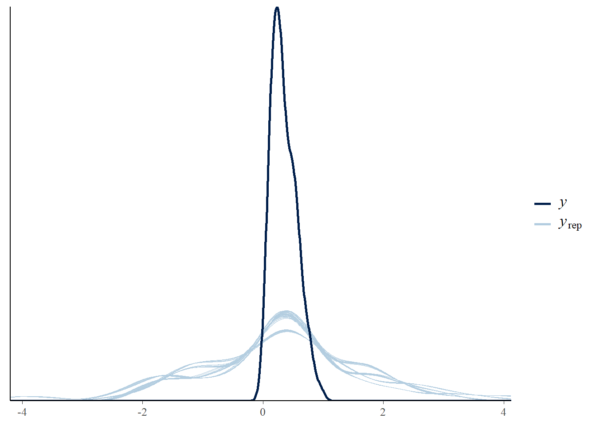
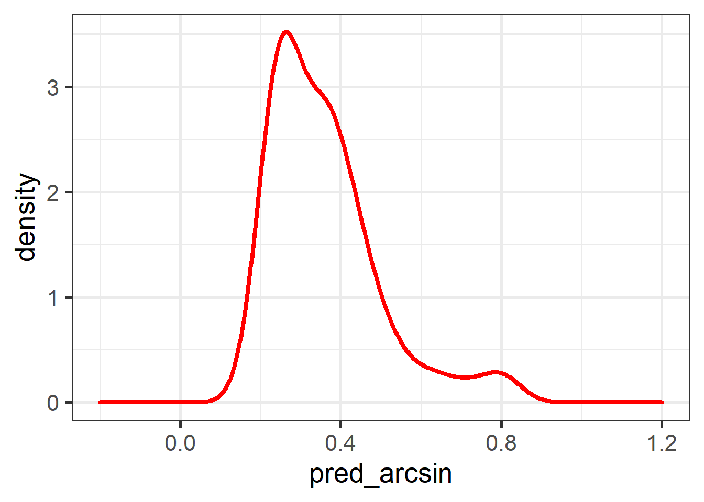
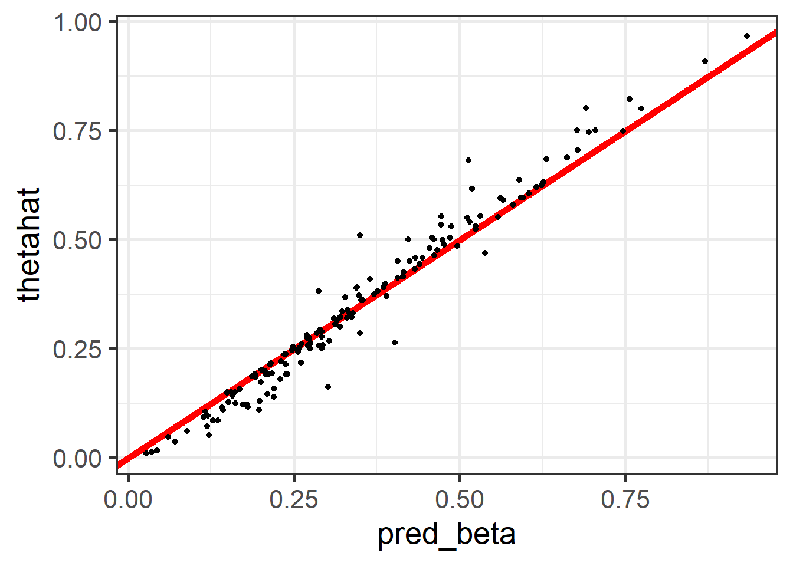
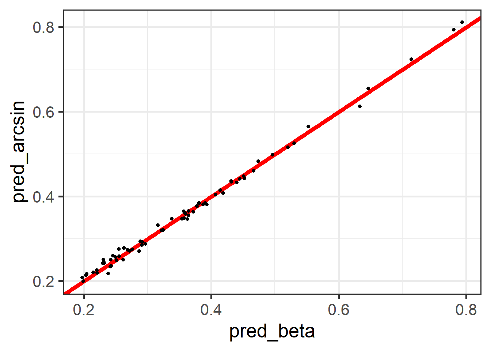

library(tidyverse)
library(magrittr)
tasa_desocupacion <- readRDS("Data/tasa_desocupacion_canton.rds") %>%
rename(canton = mpio)
encuesta <- readRDS("Data/encuestaECU20N.rds") %>%
transmute(
upm,
provincia = substr(upm, 1, 2),
canton = substr(upm, 1, 4),
ingreso = ingcorte,
pobreza = ifelse(ingreso<lp,1,0),
estrato = paste0(provincia, areageo2),
fep = `_fep`
) Fay Herriot en R y STAN
CEPAL - División de Estadísticas Sociales
Estimación de Fay Herriot normal.
El estimador directo no es el único insumo del modelo de áreas de Fay-Herriot; también lo es su varianza. El estimador puntual da un indicio de la localización del parámetro, y su varianza presenta el nivel de certeza o confianza sobre esta localización.
Al tratar con cifras provenientes de procesamientos con encuestas de hogares, es indispensable siempre tener en cuenta que el sustento inferencial recae en la estrategia de muestreo, definida como la dupla compuesta por el diseño de muestreo y el estimador escogido.
Datos de la encuesta
Definir el diseño muestral
library(survey)
library(srvyr)
diseno <-
as_survey_design(
ids = upm,
weights = fep,
strata = estrato,
nest = TRUE,
.data = encuesta
)Estimación directa
\[ \hat{\bar{Y}}_d = \frac{1}{\hat{N}_d} \sum_{s_d}w_{k}y_{k} \]
Estimacion_dir <- diseno %>% group_by(canton) %>%
summarise(nd = unweighted(n()),
thetahat = survey_mean(pobreza, vartype = c("se"), deff = TRUE)) %>%
full_join(tasa_desocupacion)
Estimacion_dir %<>%
mutate(
thetahat_se = ifelse(thetahat_se < 0.00001, 0.00001, thetahat_se),
thetahat_deff = ifelse(
thetahat_deff < 0.00001 | is.nan(thetahat_deff),
1,
thetahat_deff
),
provincia = substr(canton, 1, 2),
) %>%
select(provincia, canton:urban.coverfraction) %>%
arrange(thetahat_se)
head(Estimacion_dir)| provincia | canton | nd | thetahat | thetahat_se | thetahat_deff | tasa_desocupacion | stable_lights | crops.coverfraction | urban.coverfraction |
|---|---|---|---|---|---|---|---|---|---|
| 01 | 0107 | 16 | 0.1250000 | 1e-05 | 1 | 0.0191304 | 604.6471 | 1838.325 | 90.62353 |
| 01 | 0109 | 19 | 0.0000000 | 1e-05 | 1 | 0.0188440 | 3074.7922 | 10789.788 | 191.94902 |
| 01 | 0110 | 19 | 0.3684211 | 1e-05 | 1 | 0.0259572 | 979.8588 | 2701.945 | 153.76863 |
| 01 | 0111 | 19 | 0.0000000 | 1e-05 | 1 | 0.0170910 | 789.4824 | 1539.753 | 101.63529 |
| 01 | 0112 | 18 | 0.0000000 | 1e-05 | 1 | 0.0196813 | 577.0824 | 2070.541 | 38.30980 |
| 02 | 0202 | 19 | 0.0000000 | 1e-05 | 1 | 0.0338238 | 894.0784 | 5522.784 | 427.90196 |
Gráfico de la desviación estándar.

Dividiendo los datos en observados y NO observados.
data_dir <- Estimacion_dir %>%
filter(!is.na(thetahat) ,!is.na(tasa_desocupacion),
thetahat > 0)
data_syn <-
Estimacion_dir %>% anti_join(data_dir %>% select(canton)) %>%
filter(!is.na(tasa_desocupacion))
cor(data_dir$thetahat, data_dir$tasa_desocupacion)[1] 0.02709861cor(data_dir$thetahat, log(data_dir$stable_lights))[1] -0.2633113cor(data_dir$thetahat, log(data_dir$crops.coverfraction))[1] -0.1957303cor(data_dir$thetahat, log(data_dir$urban.coverfraction))[1] -0.2226019Modelo bayesiano
\[ Y \mid \mu,\sigma_e \sim N(\mu, \sigma_e)\\ \mu = \boldsymbol{X\beta} + V \] donde \(V \sim N(0 , \sigma_v)\).
Las distribuciones aprioris para \(\boldsymbol{\beta}\) y \(\sigma^2_v\)
\[ \beta_k \sim N(\mu, \tau^2)\\ \sigma^2_v \sim Inversa-Gamma(\alpha_1,\alpha_2) \]
Creando código de STAN
data {
int<lower=0> N1; // number of data items
int<lower=0> N2; // number of data items for prediction
int<lower=0> p; // number of predictors
matrix[N1, p] X; // predictor matrix
matrix[N2, p] Xs; // predictor matrix
vector[N1] y; // predictor matrix
vector[N1] sigma_e; // known variances
}
// The parameters accepted by the model. Our model
// accepts two parameters 'mu' and 'sigma'.
parameters {
vector[p] beta; // coefficients for predictors
real<lower=0> sigma2_v;
vector[N1] v;
}
transformed parameters{
vector[N1] theta;
real<lower=0> sigma_v;
theta = X * beta + v;
sigma_v = sqrt(sigma2_v);
}
model {
// likelihood
y ~ normal(theta, sigma_e);
// priors
beta ~ normal(0, 100);
v ~ normal(0, sigma_v);
sigma2_v ~ inv_gamma(0.0001, 0.0001);
}
generated quantities{
vector[N2] y_pred;
for(j in 1:N2) {
y_pred[j] = normal_rng(Xs[j] * beta, sigma_v);
}
}Preparando el código de STAN
library(cmdstanr)
fit_FH_Nornal <- cmdstan_model("Data/modelosStan/FH_normal.stan")Organizando datos covariables para STAN
Xdat <-
model.matrix(
thetahat ~ provincia + tasa_desocupacion,
data = data_dir
)
Xs <-
model.matrix(
canton ~ provincia + tasa_desocupacion ,
data = data_syn
)
temp <- setdiff(colnames(Xdat),colnames(Xs))
temp <- matrix(
0,
nrow = nrow(Xs),
ncol = length(temp),
dimnames = list(1:nrow(Xs), temp)
)
Xs <- cbind(Xs,temp)[,colnames(Xdat)]Preparando los datos para STAN
sample_data <- list(
N1 = nrow(data_dir), # Observados.
N2 = nrow(data_syn), # NO Observados.
p = ncol(Xdat), # Número de regresores.
X = as.matrix(Xdat), # Covariables Observados.
Xs = as.matrix(Xs), # Covariables NO Observados
y = as.numeric(data_dir$thetahat), # Estimación directa.
sigma_e = as.numeric(data_dir$thetahat_se) # Error de estimación
)Para ejecutar STAN en R tenemos la librería cmdstanr
model_FH_Nornal <-
fit_FH_Nornal$sample(
data = sample_data,
chains = 4,
parallel_chains = 4,
seed = 1234,
refresh = 1000
)Running MCMC with 4 parallel chains...
Chain 1 Iteration: 1 / 2000 [ 0%] (Warmup)
Chain 2 Iteration: 1 / 2000 [ 0%] (Warmup)
Chain 3 Iteration: 1 / 2000 [ 0%] (Warmup)
Chain 4 Iteration: 1 / 2000 [ 0%] (Warmup)
Chain 1 Iteration: 1000 / 2000 [ 50%] (Warmup)
Chain 1 Iteration: 1001 / 2000 [ 50%] (Sampling)
Chain 2 Iteration: 1000 / 2000 [ 50%] (Warmup)
Chain 2 Iteration: 1001 / 2000 [ 50%] (Sampling)
Chain 4 Iteration: 1000 / 2000 [ 50%] (Warmup)
Chain 4 Iteration: 1001 / 2000 [ 50%] (Sampling)
Chain 3 Iteration: 1000 / 2000 [ 50%] (Warmup)
Chain 3 Iteration: 1001 / 2000 [ 50%] (Sampling)
Chain 4 Iteration: 2000 / 2000 [100%] (Sampling)
Chain 1 Iteration: 2000 / 2000 [100%] (Sampling)
Chain 1 finished in 93.4 seconds.
Chain 4 finished in 93.2 seconds.
Chain 2 Iteration: 2000 / 2000 [100%] (Sampling)
Chain 2 finished in 93.5 seconds.
Chain 3 Iteration: 2000 / 2000 [100%] (Sampling)
Chain 3 finished in 94.7 seconds.
All 4 chains finished successfully.
Mean chain execution time: 93.7 seconds.
Total execution time: 95.2 seconds.Comparando resultados.
library(posterior)
library(bayesplot)
library(patchwork)
N1 <- nrow(data_dir)
# Predicción de la estimación (Observados)
y_pred_B <- model_FH_Nornal$draws(variables = "theta", format = "matrix")
rowsrandom <- sample(nrow(y_pred_B), 100)
y_pred2 <- y_pred_B[rowsrandom, 1:N1]
# Comparando predicción con las cadenas
ppc_dens_overlay(y = as.numeric(data_dir$thetahat), y_pred2) 
Adicionando más covariables modelo.
Xdat <-
model.matrix(
thetahat ~ provincia + tasa_desocupacion +
log(stable_lights/100000) +
log(crops.coverfraction/100000) +
log(urban.coverfraction/100000),
data = data_dir
)
Xs <-
model.matrix(
canton ~ provincia + tasa_desocupacion +
log(stable_lights/100000) +
log(crops.coverfraction/100000) +
log(urban.coverfraction/100000) ,
data = data_syn
)
temp <- setdiff(colnames(Xdat),colnames(Xs))
temp <- matrix(
0,
nrow = nrow(Xs),
ncol = length(temp),
dimnames = list(1:nrow(Xs), temp)
)
Xs <- cbind(Xs,temp)[,colnames(Xdat)]Preparando los datos para STAN
sample_data <- list(
N1 = nrow(data_dir), # Observados.
N2 = nrow(data_syn), # NO Observados.
p = ncol(Xdat), # Número de regresores.
X = as.matrix(Xdat), # Covariables Observados.
Xs = as.matrix(Xs), # Covariables NO Observados
y = as.numeric(data_dir$thetahat), # Estimación directa.
sigma_e = as.numeric(data_dir$thetahat_se) # Error de estimación
)Para ejecutar STAN en R tenemos la librería cmdstanr
model_FH_Nornal <-
fit_FH_Nornal$sample(
data = sample_data,
chains = 4,
parallel_chains = 4,
seed = 1234,
refresh = 1000
)Running MCMC with 4 parallel chains...
Chain 1 Iteration: 1 / 2000 [ 0%] (Warmup)
Chain 2 Iteration: 1 / 2000 [ 0%] (Warmup)
Chain 3 Iteration: 1 / 2000 [ 0%] (Warmup)
Chain 4 Iteration: 1 / 2000 [ 0%] (Warmup)
Chain 1 Iteration: 1000 / 2000 [ 50%] (Warmup)
Chain 1 Iteration: 1001 / 2000 [ 50%] (Sampling)
Chain 3 Iteration: 1000 / 2000 [ 50%] (Warmup)
Chain 3 Iteration: 1001 / 2000 [ 50%] (Sampling)
Chain 4 Iteration: 1000 / 2000 [ 50%] (Warmup)
Chain 4 Iteration: 1001 / 2000 [ 50%] (Sampling)
Chain 2 Iteration: 1000 / 2000 [ 50%] (Warmup)
Chain 2 Iteration: 1001 / 2000 [ 50%] (Sampling)
Chain 1 Iteration: 2000 / 2000 [100%] (Sampling)
Chain 1 finished in 73.0 seconds.
Chain 3 Iteration: 2000 / 2000 [100%] (Sampling)
Chain 3 finished in 77.5 seconds.
Chain 4 Iteration: 2000 / 2000 [100%] (Sampling)
Chain 4 finished in 79.5 seconds.
Chain 2 Iteration: 2000 / 2000 [100%] (Sampling)
Chain 2 finished in 82.0 seconds.
All 4 chains finished successfully.
Mean chain execution time: 78.0 seconds.
Total execution time: 82.2 seconds.Comparando resultados.
# Predicción de la estimación (Observados)
y_pred_B <- model_FH_Nornal$draws(variables = "theta", format = "matrix")
rowsrandom <- sample(nrow(y_pred_B), 100)
y_pred2 <- y_pred_B[rowsrandom, 1:N1]
# Comparando predicción con las cadenas
ppc_dens_overlay(y = as.numeric(data_dir$thetahat), y_pred2) 
Comparando estimación directa y predicción de FH
theta_FH <- model_FH_Nornal$summary(variables = "theta")
plot(theta_FH$mean, data_dir$thetahat)
abline(b=1,a=0, col = "red")
Estimación de Fay Herriot arcsin.
En su concepción más básica, el modelo de FH es una combinación lineal de covariables. Sin embargo, el resultado de esta combinación pueden tomar valores que se salen del rango aceptable en el que puede estar una proporción; es decir, en general el estimador de Fay-Herriot \(\theta \in R\), mientras que el estimador directo \(\theta \in (0,1)\).
Transformación arcoseno
\[ \hat{z}_d = arcsin\left( \sqrt{ \hat{\theta}_d} \right) \] donde \[ Var\left( \hat{z}_d \right) = \frac{\widehat{DEFF}_d}{4\times n_d} = \frac{1}{4\times n_{d,efectivo} } \]
Estimación directa
data_dir %<>% mutate(
n_effec = nd/thetahat_deff,
varhat = 1/(4*n_effec),
T_thetahat = asin(sqrt(thetahat))
)Modelo bayesiano
\[ Z \mid \mu,\sigma_e \sim N(\mu, \sigma_e)\\ \mu = \boldsymbol{X\beta} + V \\ \theta = \left(sin(\mu)\right)^2 \] donde \(V \sim N(0 , \sigma_v)\).
Las distribuciones aprioris para \(\boldsymbol{\beta}\) y \(\sigma^2_v\)
\[ \beta_k \sim N(\mu, \tau^2)\\ \sigma^2_v \sim Inversa-Gamma(\alpha_1,\alpha_2) \]
Creando código de STAN
data {
int<lower=0> N1; // number of data items
int<lower=0> N2; // number of data items for prediction
int<lower=0> p; // number of predictors
matrix[N1, p] X; // predictor matrix
matrix[N2, p] Xs; // predictor matrix
vector[N1] y; // predictor matrix
vector[N1] sigma_e; // known variances
}
// The parameters accepted by the model. Our model
// accepts two parameters 'mu' and 'sigma'.
parameters {
vector[p] beta; // coefficients for predictors
real<lower=0> sigma2_v;
vector[N1] v;
}
transformed parameters{
vector[N1] theta;
vector[N1] lp;
real<lower=0> sigma_v;
lp = X * beta + v;
sigma_v = sqrt(sigma2_v);
for(k in 1:N1){
theta[k] = pow(sin(lp[k]), 2);
}
}
model {
// likelihood
y ~ normal(lp, sigma_e);
// priors
beta ~ normal(0, 100);
v ~ normal(0, sigma_v);
sigma2_v ~ inv_gamma(0.0001, 0.0001);
}
generated quantities{
vector[N2] theta_pred;
vector[N2] lppred;
for(j in 1:N2) {
lppred[j] = normal_rng(Xs[j] * beta, sigma_v);
theta_pred[j] = pow(sin(lppred[j]), 2);
}
}Preparando el código de STAN
fit_FH_arcsin_Nornal <- cmdstan_model("Data/modelosStan/FH_arcsin_normal.stan")sample_data <- list(N1 = nrow(data_dir),
N2 = nrow(data_syn),
p = ncol(Xdat),
X = as.matrix(Xdat),
Xs = as.matrix(Xs),
y = as.numeric(data_dir$T_thetahat),
sigma_e = sqrt(data_dir$varhat)
)Para ejecutar STAN en R tenemos la librería cmdstanr
model_FH_arcsin_Nornal <-
fit_FH_arcsin_Nornal$sample(
data = sample_data,
iter_warmup = 1000,
iter_sampling = 1000,
chains = 4,
parallel_chains = 4,
seed = 1234,
refresh = 1000
)Running MCMC with 4 parallel chains...
Chain 1 Iteration: 1 / 2000 [ 0%] (Warmup)
Chain 2 Iteration: 1 / 2000 [ 0%] (Warmup)
Chain 3 Iteration: 1 / 2000 [ 0%] (Warmup)
Chain 4 Iteration: 1 / 2000 [ 0%] (Warmup)
Chain 1 Iteration: 1000 / 2000 [ 50%] (Warmup)
Chain 1 Iteration: 1001 / 2000 [ 50%] (Sampling)
Chain 2 Iteration: 1000 / 2000 [ 50%] (Warmup)
Chain 4 Iteration: 1000 / 2000 [ 50%] (Warmup)
Chain 2 Iteration: 1001 / 2000 [ 50%] (Sampling)
Chain 4 Iteration: 1001 / 2000 [ 50%] (Sampling)
Chain 3 Iteration: 1000 / 2000 [ 50%] (Warmup)
Chain 3 Iteration: 1001 / 2000 [ 50%] (Sampling)
Chain 4 Iteration: 2000 / 2000 [100%] (Sampling)
Chain 4 finished in 79.2 seconds.
Chain 3 Iteration: 2000 / 2000 [100%] (Sampling)
Chain 3 finished in 80.1 seconds.
Chain 2 Iteration: 2000 / 2000 [100%] (Sampling)
Chain 2 finished in 80.8 seconds.
Chain 1 Iteration: 2000 / 2000 [100%] (Sampling)
Chain 1 finished in 89.8 seconds.
All 4 chains finished successfully.
Mean chain execution time: 82.4 seconds.
Total execution time: 90.0 seconds.Comparando resultados.
y_pred_B <- model_FH_arcsin_Nornal$draws(variables = "theta", format = "matrix")
rowsrandom <- sample(nrow(y_pred_B), 100)
y_pred2 <- y_pred_B[rowsrandom, 1:N1]
ppc_dens_overlay(y = as.numeric(data_dir$thetahat), y_pred2) +
xlim(-0.2,1.2)
library(ggplot2)
theta_FH <- model_FH_arcsin_Nornal$summary(variables = "theta")
data_dir %<>% mutate(pred_arcsin = theta_FH$mean)
ggplot(data = data_dir, aes(x = pred_arcsin, y = thetahat)) +
geom_abline(
slope = 1,
intercept = 0,
color = "red",
size = 2
) +
geom_point() + theme_bw(base_size = 20)Predicción en los dominios NO observados
theta_FH_pred <-
model_FH_arcsin_Nornal$summary(variables = "theta_pred")
data_syn %<>% mutate(pred_arcsin = theta_FH_pred$mean)
ggplot(data = data_syn, aes(x = pred_arcsin)) +
geom_density(size = 1.5, color = "red") +
xlim(-0.2, 1.2) +
theme_bw(base_size = 20)Estimación de los parámetros
model_FH_arcsin_Nornal$summary(
variables = c("sigma2_v"))| variable | mean | median | sd | mad | q5 | q95 | rhat | ess_bulk | ess_tail |
|---|---|---|---|---|---|---|---|---|---|
| sigma2_v | 0.0404093 | 0.0399547 | 0.0061034 | 0.0061561 | 0.0313768 | 0.0510811 | 1.000992 | 2857.673 | 3038.853 |
library(posterior)
library(bayesplot)
(mcmc_dens_chains(model_FH_arcsin_Nornal$draws("sigma2_v")) +
mcmc_areas(model_FH_arcsin_Nornal$draws("sigma2_v")))/
mcmc_trace(model_FH_arcsin_Nornal$draws("sigma2_v"))
Estimación de Fay Herriot beta
Modelo bayesiano
\[ Y \mid a,b \sim beta(a, b)\\ a = \theta * \phi\\ b = (1 - \theta) * \phi\\ \] donde
\[ \theta = \frac{\exp{\left(\mu\right)}}{ 1+ \exp{\left(\mu\right)}}\\ \mu = \boldsymbol{X\beta} + V \] con \(V \sim N(0 , \sigma_v)\) y $= $
Las distribuciones aprioris para \(\boldsymbol{\beta}\) y \(\sigma^2_v\)
\[ \beta_k \sim N(\mu, \tau^2)\\ \sigma^2_v \sim Inversa-Gamma(\alpha_1,\alpha_2) \]
Creando código de STAN
data {
int<lower=1> N1; // sample size
int<lower=1> N2; // sample size
int<lower=1> p; // p predictors
vector<lower=0,upper=1>[N1] y; // response
matrix[N1,p] X;
matrix[N2,p] Xs;
vector<lower=0>[N1] phi; // dispersion parameter
}
parameters {
vector[p] beta;
real<lower=0> sigma2_v; // K predictors
vector[N1] v;
// reg coefficients
}
transformed parameters{
vector[N1] LP;
real<lower=0> sigma_v;
vector[N1] theta; // linear predictor
LP = X * beta + v;
sigma_v = sqrt(sigma2_v);
for (i in 1:N1) {
theta[i] = inv_logit(LP[i]);
}
}
model {
// model calculations
vector[N1] a; // parameter for beta distn
vector[N1] b; // parameter for beta distn
for (i in 1:N1) {
a[i] = theta[i] * phi[i];
b[i] = (1 - theta[i]) * phi[i];
}
// priors
beta ~ normal(0, 100);
v ~ normal(0, sigma_v);
sigma2_v ~ inv_gamma(0.0001, 0.0001);
// likelihood
y ~ beta(a, b);
}
generated quantities {
vector[N2] y_pred;
vector[N2] thetapred;
for (i in 1:N2) {
y_pred[i] = normal_rng(Xs[i] * beta, sigma_v);
thetapred[i] = inv_logit(y_pred[i]);
}
}Preparando el código de STAN
fit_FH_beta <- cmdstan_model("Data/modelosStan/FH_beta.stan")sample_data <- list(N1 = nrow(data_dir),
N2 = nrow(data_syn),
p = ncol(Xdat),
X = as.matrix(Xdat),
Xs = as.matrix(Xs),
y = as.numeric(data_dir$thetahat),
phi = data_dir$n_effec - 1
)Para ejecutar STAN en R tenemos la librería cmdstanr
model_FH_beta <-
fit_FH_beta$sample(
data = sample_data,
iter_warmup = 1000,
iter_sampling = 1000,
chains = 4,
parallel_chains = 4,
seed = 1234,
refresh = 1000
)Running MCMC with 4 parallel chains...
Chain 1 Iteration: 1 / 2000 [ 0%] (Warmup)
Chain 2 Iteration: 1 / 2000 [ 0%] (Warmup)
Chain 3 Iteration: 1 / 2000 [ 0%] (Warmup)
Chain 4 Iteration: 1 / 2000 [ 0%] (Warmup)
Chain 2 Iteration: 1000 / 2000 [ 50%] (Warmup)
Chain 2 Iteration: 1001 / 2000 [ 50%] (Sampling)
Chain 1 Iteration: 1000 / 2000 [ 50%] (Warmup)
Chain 1 Iteration: 1001 / 2000 [ 50%] (Sampling)
Chain 4 Iteration: 1000 / 2000 [ 50%] (Warmup)
Chain 4 Iteration: 1001 / 2000 [ 50%] (Sampling)
Chain 3 Iteration: 1000 / 2000 [ 50%] (Warmup)
Chain 3 Iteration: 1001 / 2000 [ 50%] (Sampling)
Chain 2 Iteration: 2000 / 2000 [100%] (Sampling)
Chain 2 finished in 252.4 seconds.
Chain 1 Iteration: 2000 / 2000 [100%] (Sampling)
Chain 1 finished in 258.5 seconds.
Chain 4 Iteration: 2000 / 2000 [100%] (Sampling)
Chain 4 finished in 261.3 seconds.
Chain 3 Iteration: 2000 / 2000 [100%] (Sampling)
Chain 3 finished in 262.6 seconds.
All 4 chains finished successfully.
Mean chain execution time: 258.7 seconds.
Total execution time: 262.9 seconds.Comparando resultados.
N1 <- nrow(data_dir)
y_pred_B <- model_FH_beta$draws(variables = "theta", format = "matrix")
rowsrandom <- sample(nrow(y_pred_B), 100)
y_pred2 <- y_pred_B[rowsrandom, 1:N1]
ppc_dens_overlay(y = as.numeric(data_dir$thetahat), y_pred2) +
xlim(-0.2,1.2)
theta_FH <- model_FH_beta$summary(variables = "theta")
data_dir %<>% mutate(pred_beta = theta_FH$mean)
ggplot(data = data_dir, aes(x = pred_beta, y = thetahat)) +
geom_abline(
slope = 1,
intercept = 0,
color = "red",
size = 2
) +
geom_point() + theme_bw(base_size = 20)Comparando las predicciones de los modelos arcsin y beta
theta_FH_pred <-
model_FH_beta$summary(variables = "thetapred")
data_syn %<>% mutate(pred_beta = theta_FH_pred$mean)
ggplot(data = data_syn, aes(x = pred_beta)) +
geom_density(size = 1.5, color = "red") +
xlim(-0.2, 1.2) +
theme_bw(base_size = 20)ggplot(data = data_syn, aes(x = pred_beta, y = pred_arcsin)) +
geom_abline(
slope = 1,
intercept = 0,
color = "red",
size = 2
) +
geom_point() + theme_bw(base_size = 20)
Estimación de los parámetros
model_FH_beta$summary(
variables = c("sigma2_v"))| variable | mean | median | sd | mad | q5 | q95 | rhat | ess_bulk | ess_tail |
|---|---|---|---|---|---|---|---|---|---|
| sigma2_v | 0.8857871 | 0.870786 | 0.1428276 | 0.1369159 | 0.6771562 | 1.131635 | 1.001354 | 2024.369 | 2936.834 |
(mcmc_dens_chains(model_FH_beta$draws("sigma2_v")) +
mcmc_areas(model_FH_beta$draws("sigma2_v")))/
mcmc_trace(model_FH_beta$draws("sigma2_v"))